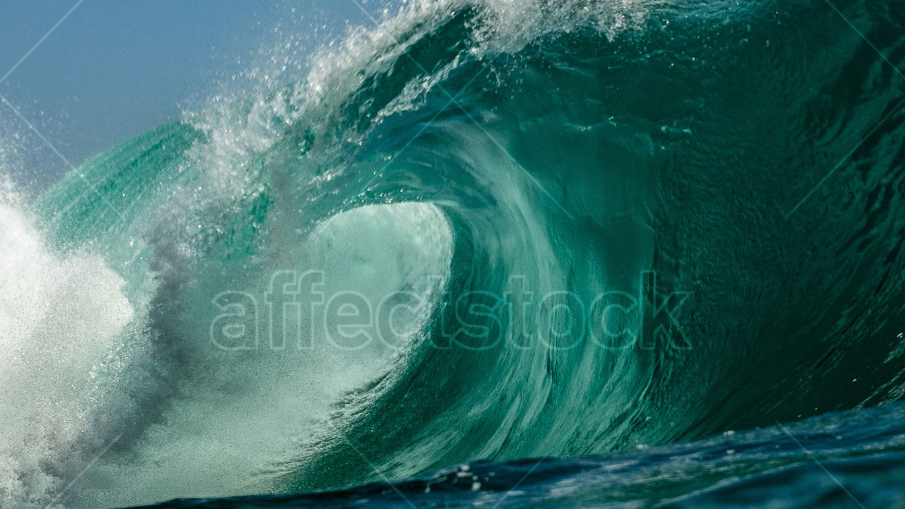

Jessica Arseneau


Fluctuation
2019
Digital video. Sound stereo.
4:42 min.
Still frame and installation view at Westpol Airspace, Leipzig
En rassemblant des images de vagues de la mer trouvées sur les sites d'images stock, Fluctuation aborde l'image comme une ressource qui prolifère, traverse les réseaux et sert de monnaie.